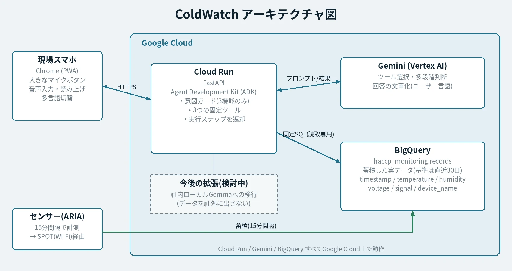
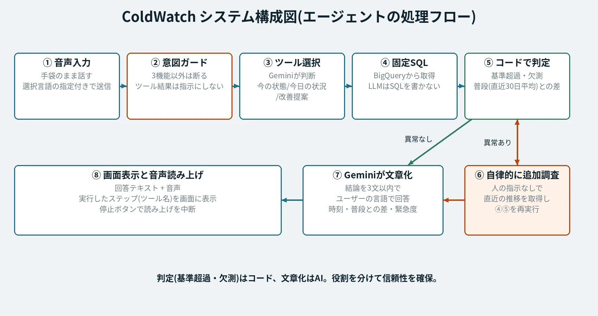
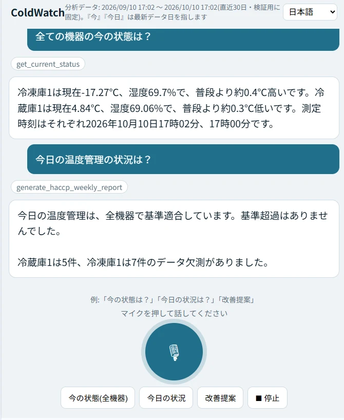
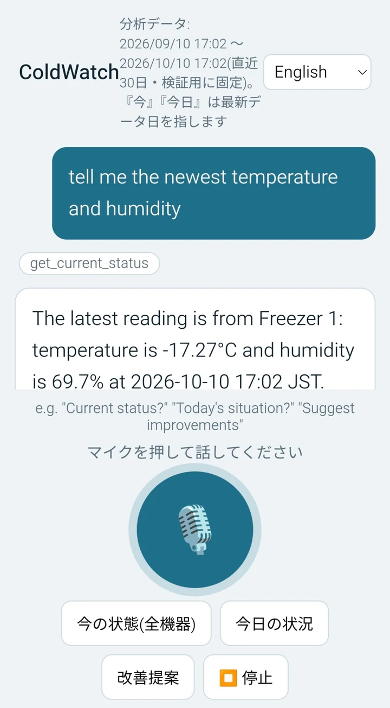

操作できない
製造中はマスク・手袋・帽子の着用が必須で、スマートフォンやパソコンの操作が難しく、温度確認が後回しになります。
HACCP対象事業者へのヒアリングから、特定小規模の食品工場や小規模な集団給食施設には共通する課題があると分かりました。利益が薄く、人手とIT人材が不足し、設備も古いことです。
製造中はマスク・手袋・帽子の着用が必須で、スマートフォンやパソコンの操作が難しく、温度確認が後回しになります。
生産エリアと事務所が離れており、確認や通知が遅れます。
高額な専用システムや外国人スタッフ向けの専用画面は負担が大きく、設備老化の予兆も記録があっても活用されていません。
話しかけるだけで動く音声エージェントです。安価なセンサーを使い、操作は手持ちのスマートフォンで足ります。ログインや画面遷移はなく、大きなマイクボタンを押して話すだけです。
全機器の温度・湿度・測定時刻を答え、普段（直近30日の平均）との差も伝えます。異常があれば、自動で直近の推移も調べて原因候補まで答えます。
基準超過（連続30分以上）と欠測を集計し、適合・不適合を先に答えます。基準超過は普段と比べて多いか少ないかも添えます。HACCP記録の確認に役立ちます。
直近7日を過去30日の基準と比べ、温度のばらつきや電圧の変化から、設備の老化の早期の兆候を数値付きで指摘します。
現場のスマートフォン（Chrome）から話しかけると、Cloud Run上のFastAPIとAgent Development Kit（ADK）で動くエージェントが受け取ります。エージェントはGeminiで必要なツールを選び、BigQueryに蓄積した1ヶ月分の実データを固定SQLで取得して、結果をユーザーの言語で答えます。センサーは15分間隔でBigQueryにデータを蓄積します。

エージェントの処理フロー

設計上の工夫
基準超過・欠測・普段との差の判定はコードで行い、AIは文章化に専念します。数値の誤りを防ぎます。
AIに自由なSQLを書かせず、固定の3ツールのみ使います。BigQueryは読み取り専用で、無関係な依頼は断ります。
異常を検知すると、人が指示しなくてもAIが直近の推移を取得し、原因候補まで答えます。実行ステップは画面に表示されます。
ログイン不要で、大きなマイクボタンだけで操作でき、日本語・英語・中国語ほか5言語に対応します。
自宅の冷蔵庫・冷凍庫で検証しました。温湿度センサーとWi-Fiゲートウェイで実データをBigQueryに蓄積し、判断の基準には直近30日を使用しています。回答の上には、AIが実行したステップ（ツール名）も表示されます。

日本語での質問と回答（今の状態・今日の状況）

英語でも同じように回答（多言語対応）
蓄積したデータ（BigQuery）
ColdWatchのデモを動画で紹介しています。